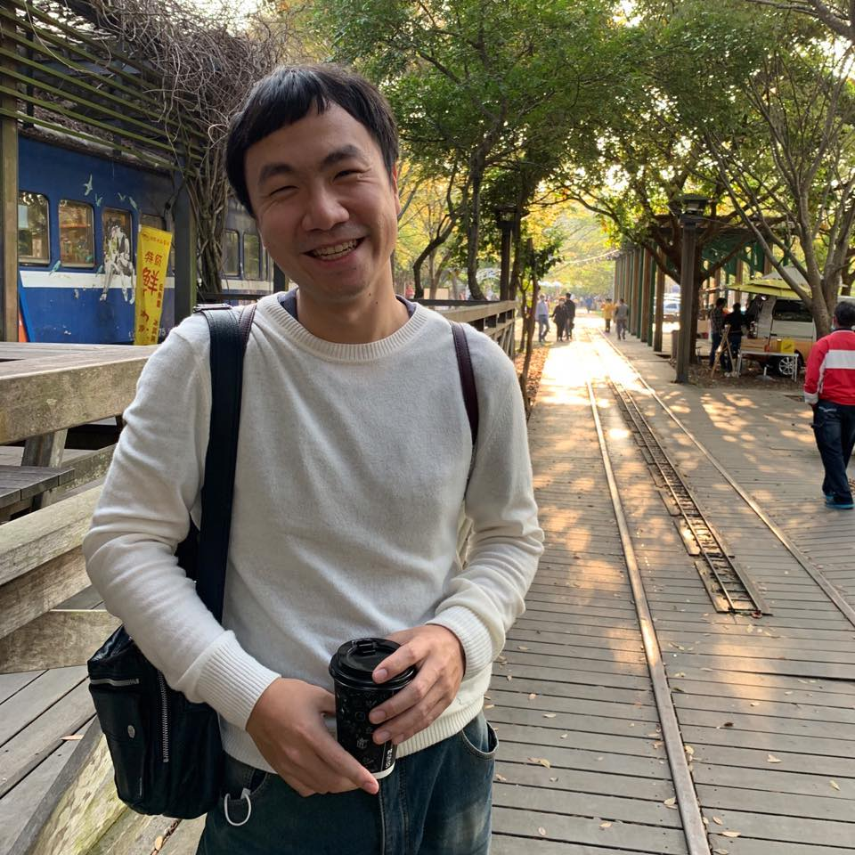

申請書
個人簡介
關於我
學經歷

彭彭老師好，我是智凱今年35歲。我是高雄人，後來種種原因來到新竹。預計明年三月留職停薪，目前是一名自動化軟體開發工程師在竹科工作近四年半的時間。
渴望自己的生活可以有所突破、有所成長！改變目前的工作型態！
喜歡學習新知識，也喜歡與人分享，非常期待可以加入WeHelp的行列！
大學和研究所都是通訊工程系畢業，研究所碩論做過影像處理覺得自己還算喜歡寫程式，後來誤打誤撞當了軟體工程師。 畢業後因為家裡經濟因素，選擇到南科台積電當設備工程師，後續覺得工作還是要和自身的興趣不抵觸才有辦法支持下去， 所以後來我尋求了內部轉職的管道，也順利轉換到自動化軟體整合開發部門(F14CIM)，展開了我當軟體開發工程師的路程。
在台積工作五年後有個契機選擇給自己休息一陣子，在蘇格蘭遊學半年享受片刻的安寧與學習英文。 回台後選擇在新竹找工作，到目前都是擔任自動化軟體開發工程師的角色，半年前開始尋找轉職的準備與資源直到現在！
工作經歷
啟碁科技
2022/08 ~ Present
自動化軟體工程師
現職
工作內容：開發EAP及產品測試程式
台灣信越半導體
2019/08 ~ 2022/08
系統工程師
工作內容：工廠MES系統轉型，開發產線作業程式
台灣積體電路
2015/08 ~ 2018/08
CIM工程師
工作內容：開發代理人及報表系統
台灣積體電路
2013/12 ~ 2015/08
設備工程師
工作內容：維護機台
學歷
中興大學
2年
通訊工程學系
碩士
論文題目: 非監督式多發性硬化症偵測和分類方法在腦部核磁共振成像
論文連結
元智大學
4年
通訊工程學系
學士
為成為軟體工程師的努力和專案作品
工作內容主要是以生產線系統和報表開發來幫助生產線運作，主要的開發工具為C#和SQL搭配winform。 為了突破這樣的工作框架以及想要將網頁開發的部分應用到工作上，主動和老闆提議使用web form開發系統來解決跨平台的問題。
目前用這樣的構想順利地來設計一套程式上傳與下載的平台佈署系統，搭配使用ASP.net和前端HTML/CSS/JavaScript的技術來開發， 目的就是希望可以再精進一些網頁開發的技能，對未來轉職成為一名後端網頁開發的工程師做預備。
如果參與這個計畫，會怎麼安排學習時間？
已經申請完留職停薪，會
全職投入
訓練營的所有安排來面對轉職的準備。第二階段和第三階段的實體活動也都會到場參與，在全員一同開發的氛圍下當場討論並解決問題， 可以模擬在團隊中合作解決問題的模式。
是否有想要加入的軟體公司？為什麼想加入該公司？
對我來說，因為工作地點還是希望以新竹為主，竹科的軟體公司似乎不多，除非可以找到遠端的軟體開發工作就不會設限地區。目前的目標是希望可以跳脫出工廠自動化的軟體開發工作， 以研發性質的軟體職缺工作機會前進。因為這類型的工作型態會是專注在軟體的技術能力，工廠性質的軟體開發不會太在乎技術上的問題，只需要可以運作即可。
請描述一件讓你產生明顯負面情緒的事情，你如何處理該情緒？
由於上次申請並沒有通過，知道自己準備還不夠周全沒辦法讓老師知道自己轉職的決心，雖然失望但知道沒被錄取其實也很正常。 我告訴自己只要再繼續努力一定可以被看見，至少你不是全然的一片白紙，相信自己可以一步一步完成來達到自己的目標。
關於這份申請網頁，請分享一個你開發時的技術心得。
除了讓靜態的網頁透過JS的技巧讓關於我和學經歷的部分可以有動態的呈現方式外，在工作經歷和學歷的部分用到Flex的方式， 可以讓標籤在同一個水平位子上做展示，知道如何運用標籤的上下層關係來展示這樣的效果，讓資料做更完善的處理與呈現。
從上次提出申請至今，多做了哪些努力？
由於上次填寫申請書時是剛開始有轉職的念頭，準備上還不夠周全無法讓彭彭老師看到我的決心，也因為是在職階段時間上可能無法配合這樣的訓練方式， 故和家人討論過後決定申請留職停薪半年來準備。
這段時間尋找了各種網路上的資源，比較之下還是喜歡老師的教學方式，並利用每天的下班時間來學習線上課程，從老師的免費線上課程開始學習JavaScript網頁前端工程、Python程式設計和進一步會員專屬的Python Flask、MongoDB 網站後端開發，以及MySQL關聯式資料庫教學，完成了以上的課程也從中累積了一定的基礎開發能力。
另外，也有到WeHelp的Facebook私下詢問是否有提供轉職相關的諮詢服務，得到的回應是近期會有這樣的機會，有需要可以再到網站上諮詢。 還是希望可以從老師規劃的三階段訓練循序漸進地完成屬於自己的專案，才有萬全的準備來面對求職的機會。
懇請彭彭老師給我一個機會，讓如此擁有決心的我可以跟著訓練營的腳步來完成轉職的準備！
其他想要對我們說的事情？
感謝彭彭老師提供這樣的平台讓有心想轉職的人可以有方向，我相信我可以做到最好，期望未來轉職成功後可以讓彭彭老師訪談並和大家分享，謝謝！